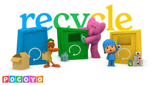

Comenzando con la recolección de los residuos de concreto. Estos residuos se transportan a plantas de tratamiento donde se clasifican y procesan, generalmente triturándolos para obtener agregados reciclados. Estos agregados pueden ser utilizados en nuevas mezclas de concreto o en otras aplicaciones, como bases de carreteras.
PROCESO
1. Recolección selectiva:
Separación de los residuos de concreto en obras de construcción y demolición. 2. Transporte:
Transporte de los residuos a plantas de tratamiento. 3. Clasificación:
Separación de los residuos de concreto de otros materiales, como acero, suciedad, etc. 4. Procesamiento:
Trituración y procesamiento de los residuos de concreto para obtener agregados reciclados de diferentes tamaños.5. Fabricación de nuevos productos:
Utilización de los agregados reciclados en nuevas mezclas de concreto, o como material de relleno en obras públicas.6. Consumo:
Uso de los productos fabricados con concreto reciclado en la construcción.

Ir ala pagina principal
ELABORADO POR ALUMNOS:CIRINO DE JESÚS BAUTISTA LÓPEZ, ITZEL YAMILETH CATELLANOS GARCIA